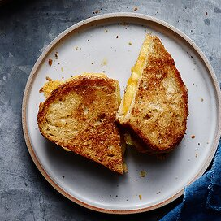

Grilled Cheese

Description
The secret to a perfectly crispy, but not burned, grilled cheese? Mayonnaise! In this recipe, you'll use mayo to make the best grilled cheese ever.
Ingredients
Makes 1 sandwich
- 2 tbsp mayonnaise
- 2 slices of bread
- 2 slices of cheese (any type; American is best!)
Steps
- Spread mayonnaise evenly on both slices of bread.
- Place cheese in between bread so that mayonnaise is on the outside.
- Place sandwich on a pan on the stove, cover, and turn on to medium heat.
- Check sandwich after 3 minutes; if needed, heat for 1-2 minutes more. Bottom should be golden brown.
- Flip sandwich and toast other side for 2-3 minutes.
- Remove from heat and let rest 3 minutes before slicing.
- Slice in half and enjoy!